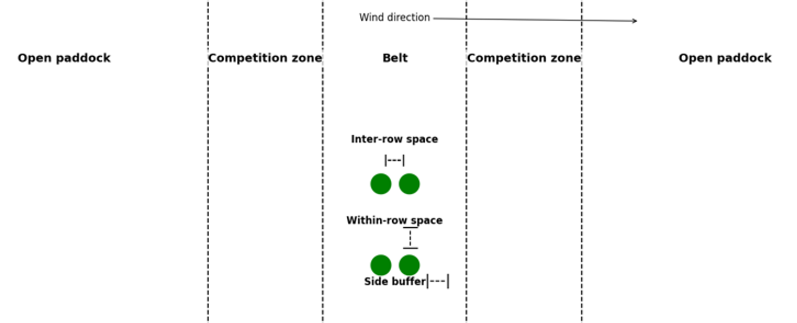

Getting started, choosing a scenario and understanding the economics of trees on Wheatbelt farms.
The calculator estimates the change in farm economics from planting trees, allowing for establishment costs, farming production forgone, interactions with nearby land and selected income streams. Use it to compare planting options and see which assumptions drive the result.
The main result is dollars per hectare of trees per year. It is an annualised economic comparison with continuing conventional farming on that land. It is not the farm's total profit or a forecast of cash received each year.
In this guide: Scenario choices · p2 | Fundamentals · p3
Reading results · p4 | Advanced inputs and saving · p5 | Worked example · p6
| Setting | When to use it |
|---|---|
| Central Wheatbelt — Northam | Higher-production conditions, including other Wheatbelt areas with comparable production. |
| Eastern Wheatbelt — Merredin | Lower-production conditions, including other Wheatbelt areas with comparable production. |
Choose the closest production match, rather than relying on geography alone. Location mainly affects the farming profit forgone when land is planted to trees. It also changes tree-growth assumptions and several farm benefits.
The WNRM map is available inside the Location info pop-up. Its sub-region boundaries are for geographic reference; they do not define the calculator's two settings. Apply care outside the Wheatbelt, where the assumptions may be less suitable.
Good = 100% production potential. Poor = 70% of that crop or pasture production potential under similar regional conditions. Select for the proposed planting site, rather than averaging the entire farm.
These percentages guide soil selection. The model has separate relationships for farming returns, carbon and biomass; choosing Poor does not reduce every result by exactly 30%.
| Option shown in the tool | Meaning |
|---|---|
| Carb Block | Carbon block: trees planted in a broader area, primarily for carbon sequestration. |
| Carb Belt | Carbon belt: narrow strips for carbon sequestration and farm benefits such as livestock shelter. |
| Bio Block | Biodiversity block: a lower-density mix of trees and shrubs focused on biodiversity. |
| Harv Belt | Harvesting belt: tree strips managed for periodic biomass harvesting. |
Planting focus and benefit checkboxes do different jobs. Focus sets planting and management assumptions; checkboxes select the benefits or income streams to include. Biomass harvesting is modelled for Harv Belt; other designs have no harvest profile.
Choose 1, 10 or 100 ha of tree planting, including its side buffers. This is not total farm area or the cropping/grazing area between belts. Area changes fixed costs per hectare and some farm interactions.
Standard uses the price or value in Advanced Inputs. Low is 50% lower; High is 50% higher. They change the relevant price/value, not tree growth, costs or every component of the result.
The calculation brings together direct planting costs, changes to the farming system and possible returns from trees.
Land opportunity cost is the farming profit forgone by allocating land to trees. It is not the purchase price of the land. More productive sites generally give up more farming income, even where trees also grow better.
Belts provide edges that can shelter livestock, crops and pastures. Trees also compete with nearby plants for water, light and nutrients. Blocks concentrate trees in one area and generally have less edge per hectare than narrow belts. The balance of these effects matters.

Livestock shelter depends on animals being able to use it and on paddock management. Increased grazing benefits apply to belts in this model; blocks receive zero. Salinity benefits depend on the extra saline area expected and how much contributing recharge area is influenced by trees. These are scenario assumptions to examine.
Australian Farm Optimisation (AFO) models the interactions among crops, pastures, livestock, land and farm resources. This tool uses pre-calculated AFO values for representative farming systems, combined with calculations for tree costs and returns. Changing inputs does not run a new, fully customised AFO farm model.
Use comparisons to understand the decision. Representative farms provide a useful starting point, but individual farm layouts, management and production can differ. Some benefits, such as aesthetics, are not assigned a dollar value in the tool.
A positive total indicates an estimated economic improvement relative to continuing conventional farming on the planted land. A negative total indicates an estimated reduction, under the selected assumptions.
The tool expresses project costs and returns as annual equivalents using a 25-year period and a 5% discount rate. This allows upfront costs and later returns to be compared. Actual establishment expenditure, credit receipts and harvest income occur at different times.
| Chart component | What it represents |
|---|---|
| Land opportunity cost | Farming profit forgone on the tree area. Always included. |
| Tree establishment and maintenance | Site preparation, seedlings, planting and subsequent management costs, annualised. Always included. |
| Livestock shelter | Modelled livestock production benefit from shelter, when selected. |
| Adjacent paddock interaction | The modelled balance of shelter and competition effects on nearby production. Always included. |
| Carbon | Carbon income less the included monitoring, auditing and setup costs, when selected. |
| Biodiversity | The assumed biodiversity value, annualised, less included monitoring and setup costs, when selected. |
| Biomass harvesting | Biomass sales less harvesting and road transport costs, when selected and supported by the planting design. |
| Micro-climate | Modelled economic benefit from the production-increase assumption, when selected. |
| Increased grazing | Additional grazing value associated with reduced erosion risk. Applies to belts when selected. |
| Reduced salinity spread | Value of limiting further salinity spread through the assumed influence on recharge area, when selected. |
The chart shows costs in red and benefits in green. Carbon, biodiversity and biomass are net components: they can be negative if the included costs exceed returns. An unchecked optional component contributes zero.
From per hectare to planting-wide impact
If a selected 10 ha scenario shows +$100/ha of trees/year, its equivalent annual impact across that planting is approximately +$1,000/year. This is an illustration of the units, not a forecast of annual cash receipts.
Identify the largest cost and benefit. Compare the result with carbon and biodiversity switched off. Then try lower prices or values to see how much the conclusion changes.
Selecting an income stream explores that assumption; it does not establish that a particular planting qualifies for a payment or that the modelled price will be available.
Advanced Inputs are pre-filled with defaults. You can keep them for an initial comparison or change only the values for which you have better information. Results combine those changes with the remaining settings.
Keep existing values filled in. Blanks become zero; they do not restore defaults and can change results or trigger errors. Reset restores all inputs, scenario selections and benefit checkboxes.
| Input group | Possible source and how to use it |
|---|---|
| Preparation, seedlings and planting | Farm records, nursery prices and contractor quotes. Check whether figures are per hectare, plant, day or hour. |
| Maintenance | Expected weed control and fertiliser costs. Distinguish initial, Year 1 and ongoing costs. |
| Carbon and biodiversity | Project-specific estimates of yields, value, setup and monitoring costs. Biodiversity Value ($/ha) is a total assumed project value per hectare that the tool annualises; it is not annual income. |
| Biomass harvesting | Yield estimates, buyer prices, harvesting quotes and distance to the processor. “Green tonnes” are fresh biomass weight. Yield is entered as an annual average; harvest receipts occur periodically. |
| Micro-climate and salinity | Site assessment or supporting modelling. Keep defaults where you do not have a stronger basis for changing the assumed production increase or recharge effects. |
Percentage fields use percentage numbers: enter 10 for 10%, not 0.10. Fields specific to a region show the selected region's values. Changing region uses that region's stored settings; it does not reset your other edits.
Valid settings are saved in this browser and may be lost if its storage is cleared. Use Print / Save PDF for a record. Open Advanced Inputs before printing to include them, and check the preview. Give each PDF a descriptive scenario name.
If a validation message appears, correct the input before using the result. The chart can still show the last valid calculation. Reset provides a fresh start if you are unsure which values have changed.
This exercise shows how included income streams can change a result. The figures below were calculated using the current tool's defaults.
Press Reset, then select Central Wheatbelt, Carb Block, Poor soil and 10 ha. Keep Advanced Inputs at defaults. Keep livestock shelter, micro-climate, increased grazing and reduced salinity spread selected. Leave biomass sales unchecked throughout this exercise.
| Run | Carbon and biodiversity settings | Impact $/ha of trees/year |
|---|---|---|
| A Farm benefits | Carbon off; biodiversity off. All price scenarios Standard. | −$127.36 |
| B Add carbon | Carbon on; biodiversity off. All price scenarios Standard. | −$34.41 |
| C Add biodiversity | Carbon on; biodiversity on. All price scenarios Standard. | +$1,075.83 |
| D Lower values | Keep both on. Change carbon and biodiversity price scenarios to Low (−50%). | +$378.28 |
In Run A, the selected farm benefits do not cover the modelled costs. Adding carbon improves the result but leaves it slightly negative. Run C becomes strongly positive because of the assumed biodiversity value. Run D demonstrates how sensitive that result is to lower credit prices and values.
For Run B, the Carbon component is +$92.95/ha/year. This is its net contribution after the included carbon-project costs, not gross carbon sales. The total moves from −$127.36 to −$34.41/ha/year.
The lesson is to inspect the assumptions behind a positive total. These are model scenarios, not promised payments. Examine the contribution of each component and the values you would need to support for your own planting.
Along with the exported result, note the planting site, date, region, soil, design, area, benefit selections, price scenarios and any values you changed. Record where replacement assumptions came from. This makes later comparisons and discussions with a farm or project adviser much easier.
Based on the calculator reviewed on 7 September 2026, Modelling Report – Trees (Michael, 2025), the supplied WNRM map and the project owner's location and soil guidance.
The report uses 4.5% perpetuity annualisation for biodiversity; the current app uses 5% over 25 years. This guide follows the app. Updated assumptions or calculations may change the example results.